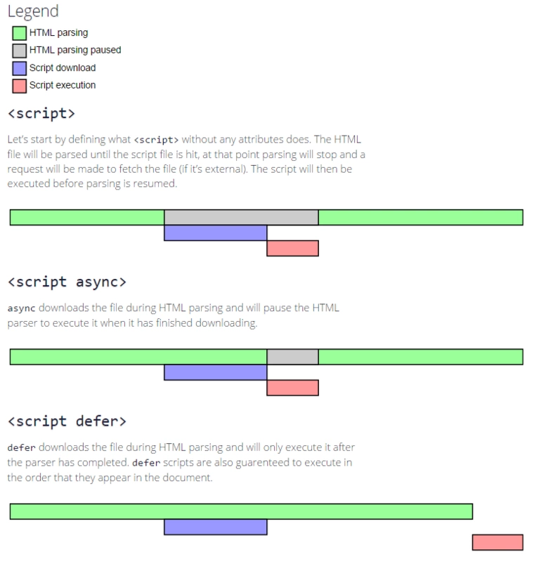

# 页面提升性能的方法有哪些？
- 资源压缩合并，减少 HTTP 请求
- 非核心代码异步加载–> 异步加载的方式–> 异步加载的区别
- 利用浏览器缓存–> 缓存的分类–> 缓存的原理
- 使用 CDN
- 预解析 DNS
# 异步加载
# 异步加载的方式
# 动态脚本加载
1 | <script src="script.js"></script> |
没有 defer 或 async，浏览器会立即加载并执行指定的脚本，“立即” 指的是在渲染该 script 标签之下的文档元素之前，也就是说不等待后续载入的文档元素，读到就加载并执行。
# async
1 | <script async src="script.js"></script> |
有 async，加载和渲染后续文档元素的过程将和 script.js 的加载与执行并行进行（异步）。
# defer
1 | <script defer src="myscript.js"></script> |
有 defer，加载后续文档元素的过程将和 script.js 的加载并行进行（异步），但是 script.js 的执行要在所有元素解析完成之后，DOMContentLoaded 事件触发之前完成。

# 异步加载的区别
- defer 和 async 在网络读取（下载）这块儿是一样的，都是异步的（相较于 HTML 解析）
- 它俩的差别在于脚本下载完之后何时执行，显然 defer 是最接近我们对于应用脚本加载和执行的要求的
- 关于 defer，此图未尽之处在于它是按照加载顺序执行脚本的，这一点要善加利用
- async 则是一个乱序执行的主，反正对它来说脚本的加载和执行是紧紧挨着的，所以不管你声明的顺序如何，只要它加载完了就会立刻执行
- 仔细想想，async 对于应用脚本的用处不大，因为它完全不考虑依赖（哪怕是最低级的顺序执行），不过它对于那些可以不依赖任何脚本或不被任何脚本依赖的脚本来说却是非常合适的，最典型的例子：Google Analytics
# 浏览器缓存
# 缓存的分类
浏览器的缓存分类有两个：
- 强缓存
- 协商缓存
# 强缓存
什么是强缓存？强在哪？其实强是强制的意思。当浏览器去请求某个文件的时候，服务端就在 respone header 里面对该文件做了缓存配置。缓存的时间、缓存类型都由服务端控制。
# Expires
Expires: Thu, 01 Dec 1994 16:00:00 GMT
使用的是本地时间和服务器时间做对比
# Cache-Control
-
cache-control: max-age=xxxx，public
客户端和代理服务器都可以缓存该资源；
客户端在 xxx 秒的有效期内，如果有请求该资源的需求的话就直接读取缓存，statu code:200 ，如果用户做了刷新操作，就向服务器发起 http 请求 -
cache-control: max-age=xxxx，private
只让客户端可以缓存该资源；代理服务器不缓存
客户端在 xxx 秒内直接读取缓存，statu code:200 -
cache-control: max-age=xxxx，immutable
客户端在 xxx 秒的有效期内，如果有请求该资源的需求的话就直接读取缓存，statu code:200 ，即使用户做了刷新操作，也不向服务器发起 http 请求 -
cache-control: no-cache
跳过设置强缓存，但是不妨碍设置协商缓存；一般如果你做了强缓存，只有在强缓存失效了才走协商缓存的，设置了 no-cache 就不会走强缓存了，每次请求都回询问服务端。 -
cache-control: no-store
不缓存，这个会让客户端、服务器都不缓存，也就没有所谓的强缓存、协商缓存了。
Cache-Control 优先于 Expires
# 协商缓存
上面说到的强缓存就是给资源设置个过期时间，客户端每次请求资源时都会看是否过期；只有在过期才会去询问服务器。所以，强缓存就是为了给客户端自给自足用的。而当某天，客户端请求该资源时发现其过期了，这是就会去请求服务器了，而这时候去请求服务器的这过程就可以设置协商缓存。这时候，协商缓存就是需要客户端和服务器两端进行交互的。
# Last-Modified（服务器下发值） If-Modified-Since（浏览器请求头）
Last-Modified：上次修改时间
每次请求加上上次返回的修改时间，服务器进行对比，如果资源正确，返回 304，使用缓存。
# Etag（Hash 值） If-None-Match
每次请求加上之前返回的 hash 值，如果正确，则返回 304，使用缓存。